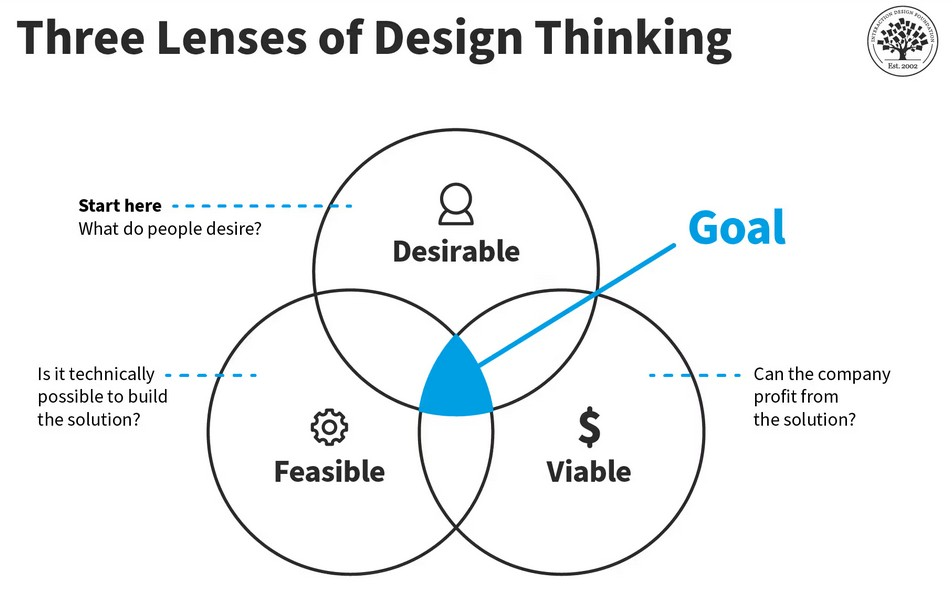

Estela Gaspar
UX Designer
Driven by design that empowers people.
Lead UX Designer | Designing Intuitive, Impactful & Human-Centered Digital Experiences | Strategic Thinker in Product & Design | GDS experience | Data, Data Visualisation, ML and AI
I am a passionate UX designer dedicated to creating ethical, user-centred solutions that add genuine value to society. I thrive on crafting products that are useful, usable, and desirable—empowering people to complete essential tasks with ease.
With experience across energy, retail, education, and government sectors, I bring a broad skillset across UX, UI, interaction design, service design, and user research. I’m expanding into ML, AI, and Python, and working toward a Six Sigma Green Belt.
I follow Design Thinking, Agile, and Lean methodologies, and I'm experienced with GOV.UK Service Standards and design systems like GDS and Google Material Design.
